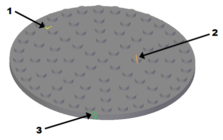
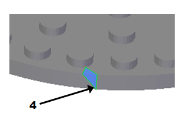

Fill Holes command
Filling holes in mesh data is part of the Reverse Engineering Workflow.
Fill Holes command
The mesh body in a document may contain imperfections where mesh data is not present. These imperfections can adversely affect the ability to identify and extract surfaces. Use the Fill Holes command to correct imperfections that interfere with successfully extracting surfaces.
-
The boundary of the hole turns orange when the Select cursor passes over it (or when the selection box encloses multiple holes).
-
The hole boundaries turn green when selected.
-
All unselected hole boundaries are highlighted in yellow.
Selecting the Fill Holes command opens the Fill Holes command bar, which is used to identify and correct the imperfections. Refer to the following table.

|
ID |
Color |
Meaning |
|---|---|---|
|
1 |
|
Yellow boundary indicates unselected hole. |
|
2 |
|
Orange boundary indicates the Select tool or Select box includes the hole, but it is not yet selected. |
|
3 |
|
Green boundary indicates the hole or holes are selected and ready for correction |
|
4 |
|
When the interior of the hole is shown in blue fill, the operation is complete and the hole is filled using the selected Fill Hole option.  |


Fill Holes command bar
The Fill Holes command bar has the following options:
- Select Bodies
-
Selects the mesh bodies to fill.
- Select Holes
-
Fills the holes from the selected bodies.
- Select All Holes
-
Selects all holes to fill.
- Fill Options
-
Controls the shape of patches that are created in the resulting filled meshes.
- Linear
-
Fills each hole without creating new mesh vertices in the interior of the hole.
- Refined
-
Produces a similar shape to linear, but may introduce a new mesh vertices in the interior of each hole to ensure new facets maintain approximately the same size as those nearby.
- Tangent
-
Uses a similar method to Refined but additionally maintains tangency of the mesh around the boundary of each hole.
- Curvature
-
Uses a similar method to Tangent but in addition adjusts the patch to maintain the general curvature of the mesh around the boundary of each hole.
- Holes List
-
Displays the Fill Holes dialog box that lists the holes from the mesh. From the dialog box you can zoom in of the selected hole or remove the selected hole.
- Reset
-
Resets the filling of the holes.
- Accept

-
Select this option to accept the selected holes. You can also right-click or press Enter to accept the selections. The selected holes are corrected using the selected Fill Holes option. The corrected area turns blue.
- Deselect

-
Select this option to deselect the selected holes.
Next steps
How do I
Create a sketch from a section curveLearn more
Reverse Engineering workflowReverse engineering example
Look up more details
Delete Mesh commandSmooth Mesh command
Align command
Align command bar
Remesh command
Remesh Options dialog box
Automatic regions command
Manual regions command
Extract surfaces command
Fit surfaces command
Deviation Analysis command
Deviation Analysis command bar
Deviation Analysis Settings dialog box
Section Sketches command
Section Sketches command bar
Section Sketches Options dialog box
Related Topics
Align a mesh body to a coordinate systemAnalyze the deviation between two objects